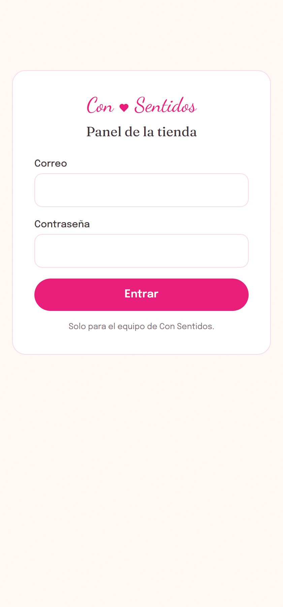
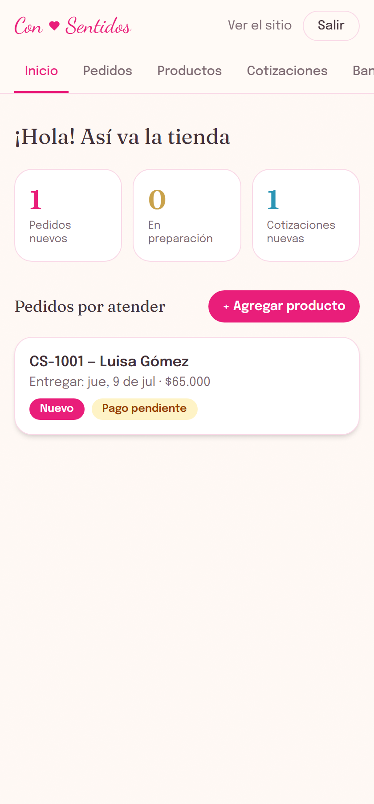
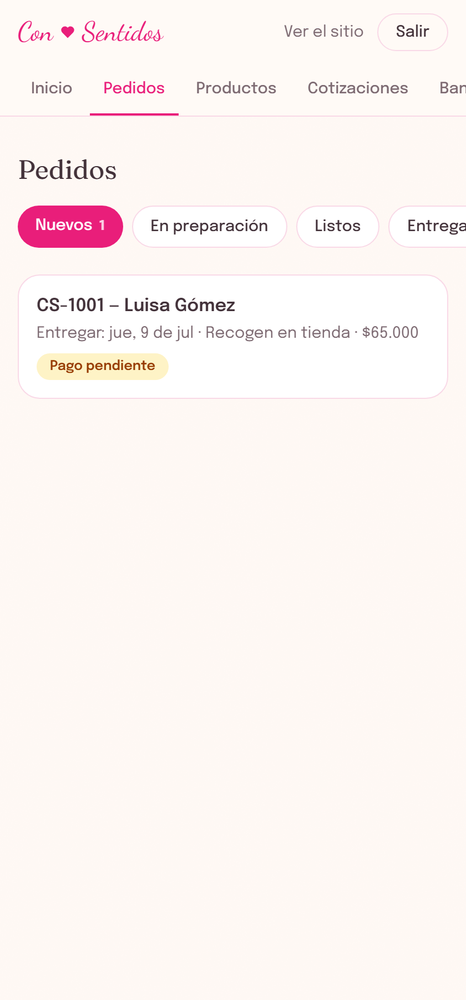
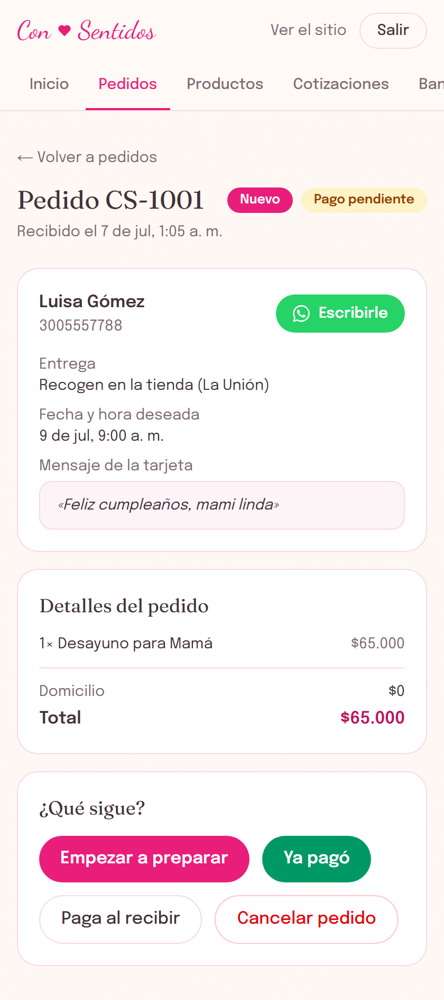
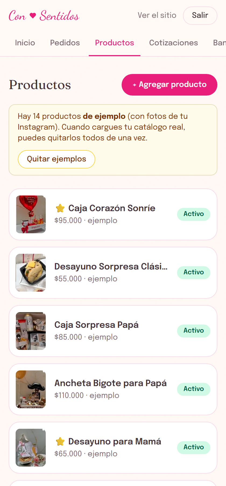
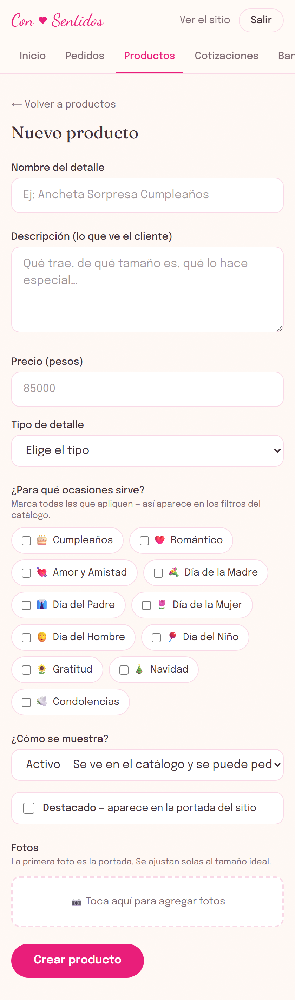
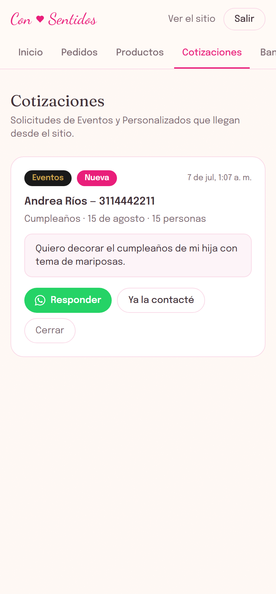
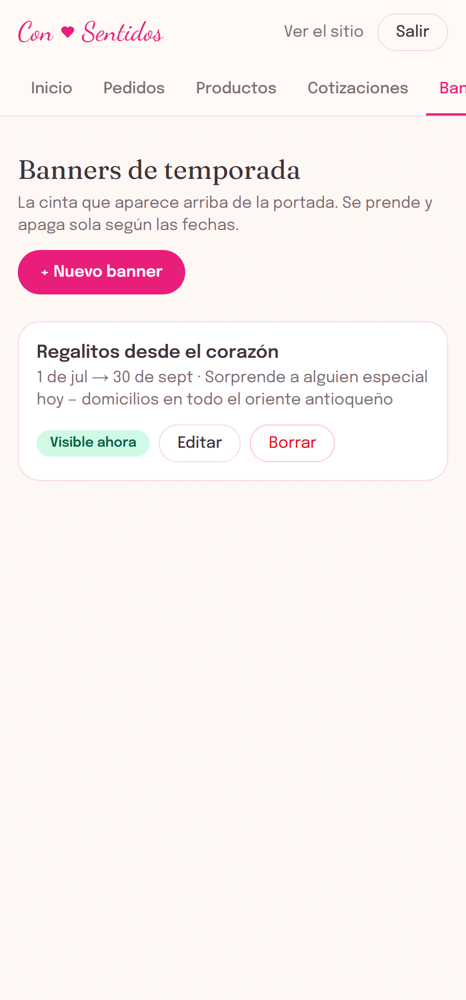
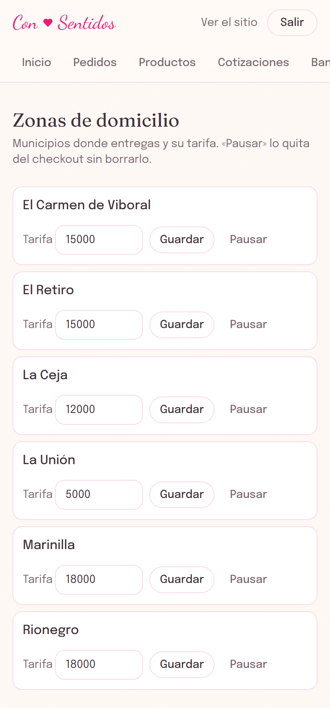

Manual del panel de la tienda
Cómo administrar tus productos, pedidos, cotizaciones,
banners y zonas de domicilio — paso a paso.
Julio de 2026
1. Entrar al panel
- En el navegador de tu celular o computador, entra a tusitio.com/admin.
- Escribe tu correo y tu contraseña y toca Entrar.
- Para salir, toca Salir arriba a la derecha.

2. El inicio: así va la tienda
Al entrar ves tres números: pedidos nuevos, en preparación y cotizaciones nuevas. Tocando cualquiera vas directo a esa lista. Abajo están los pedidos por atender.

3. Pedidos
Cada pedido pasa por estos estados. Tú lo vas moviendo con un botón a medida que avanzas:
| Estado | Qué significa |
|---|---|
| Nuevo | Acaba de llegar del sitio. Revísalo y confírmalo con el cliente por WhatsApp. |
| En preparación | Ya lo estás armando. |
| Listo para entregar | Armado y esperando entrega o recogida. |
| Entregado | ¡Misión cumplida! |
| Cancelado | No se hizo. Se puede reactivar si el cliente se arrepiente. |

Dentro de un pedido
- Ves los datos del cliente, la fecha y hora deseada, el mensaje de la tarjeta y el total.
- Escribirle abre WhatsApp directo con el cliente.
- El botón grande rosado avanza el pedido al siguiente paso.
- Ya pagó = te llegó la transferencia. Paga al recibir = contraentrega.
- Cancelar pedido siempre pregunta antes, tranquila.

4. Productos

Crear un producto
- Toca + Agregar producto.
- Escribe el nombre, la descripción (lo que lee el cliente) y el precio en pesos, sin puntos: 85000.
- Elige el tipo y marca las ocasiones — así aparece en los filtros del catálogo.
- Toca agregar fotos y elige las de tu celular: se ajustan solas de tamaño. La primera es la portada.
- Toca Crear producto. Ya queda visible en el sitio.

Los tres estados de un producto
| Activo | Se ve en el catálogo y se puede pedir. |
| Agotado | Se ve (con aviso) pero no se puede pedir. Ideal cuando se te acaba un material. |
| Oculto | Desaparece del sitio sin borrarse. |
5. Cotizaciones
Cuando alguien llena el formulario de Eventos (dorado) o de Personalizados (azul) en el sitio, llega aquí y también a tu correo.
- Responder abre WhatsApp con esa persona.
- Cuando ya hablaron, toca Ya la contacté. Cuando se concrete (o no), Cerrar.

6. Banners de temporada
El banner es la cinta rosada que aparece arriba de la portada del sitio ("Se acerca el Día de la Madre…"). Se prende y apaga solo según las fechas que le pongas.
- Toca + Nuevo banner.
- Escribe el título, elige a dónde lleva y las fechas desde / hasta.
- Guarda. En la lista ves si está Visible ahora, Programado o Vencido.

7. Zonas de domicilio
- Cambia la tarifa de un municipio y toca Guardar — el checkout se actualiza solo.
- Pausar quita el municipio del checkout sin borrarlo (por ejemplo, si esa semana no hay quién lleve).
- Agrega municipios nuevos abajo.

8. Si algo sale raro
- No pasa nada por mirar: ver pedidos, productos o cotizaciones nunca daña nada. Las acciones delicadas (borrar, cancelar) siempre te preguntan "¿estás segura?".
- ¿Una página se ve extraña o no carga? Refresca (desliza hacia abajo en el celular) y revisa tu internet.
- ¿No entra la contraseña? Escríbenos y te la restablecemos en minutos.
- ¿Cambiaste algo y el sitio no lo muestra? Dale hasta 5 minutos y refresca — el sitio guarda una copia rápida que se renueva sola.
- Para cualquier otra cosa: escríbele al desarrollador. Ningún error tuyo puede dañar los pedidos ya guardados.